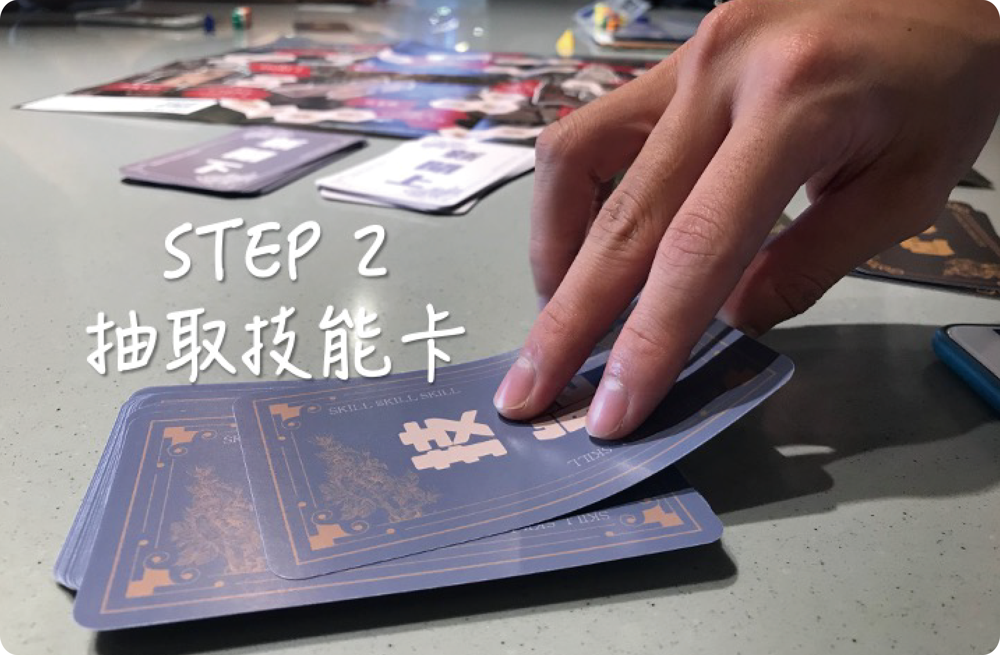

社群媒體發文無限制，人人皆可發聲。
當資訊輸出者不再受限於媒體，也造就假資訊氾濫的現況。
面對爆炸的資訊量，閱聽人漸漸無法辨別資訊真偽，成為假資訊擴散的主因之一。
社群媒體的假資訊擴散，該如何解決？
中山大報社隆重推出《博德村事件簿》
實體化媒體現況，打破媒體識讀的乏味印象。
ORIGIN ORIGIN ORIGIN
GAMER GAMER GAMER
建議遊玩人數：4-6 人
建議年齡：18~99 歲
Step 1｜抽取角色卡，分出你的派別【準備階段】
「間諜VS探員」兩派對立，各自行動。
在解謎《博德村》秘辛的同時，玩家須依照自身的派別行動。
探員效忠於國家，必須破解博德村秘辛並上呈給國家高層；
間諜為博德村安插在探員中的一員，必須以博德村最大利益為優先。
遊戲過程中，別輕易相信任何人。
Step 2｜抽3張技能卡作為手牌【準備階段】
遊戲開始前，抽取3張技能卡。
遊戲過程中最多只能持有3張技能卡，其他卡牌數量不設限。
Step 3｜執行技能或丟棄【移動階段】
猜拳決定開局玩家，順時針進行遊戲。
每回合先抽取一張新的技能卡，再決定要執行或丟棄一張技能。
(手中維持3張技能卡。)
Step 4｜擲骰並執行該格動作【移動階段】
擲骰決定步數並執行該格動作。
抽取新聞卡、情報卡、劇情卡或其他指定動作。
(若技能卡已移動則不需再擲骰，只需依敘述執行該格動作即可。)
Step 5｜【說話時間】
所有玩家結束移動後，從第一位移動的玩家開始輪流發言。
期間可以交換情報、闡述看法，更重要的是：確認事情的真偽。
Step 6｜輪流擔任開局玩家
第一回合結束後，由「開局玩家」右手邊的玩家作為下回合「開局玩家」，以此類推，逆時針輪流擔任。
先破解《博德村事件簿》的派別即得獲勝
第一回合結束後，由「開局玩家」右手邊的玩家作為下回合「開局玩家」，以此類推，順時針輪流擔任。